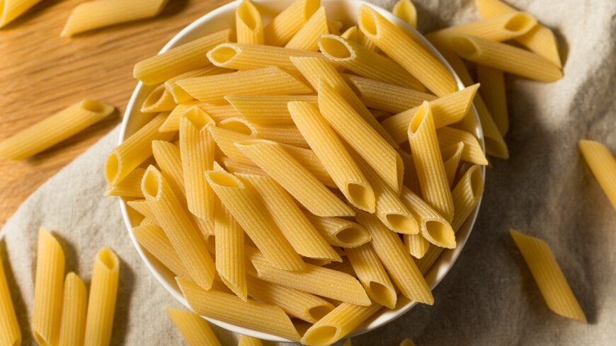
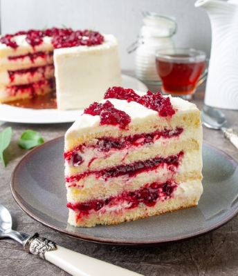
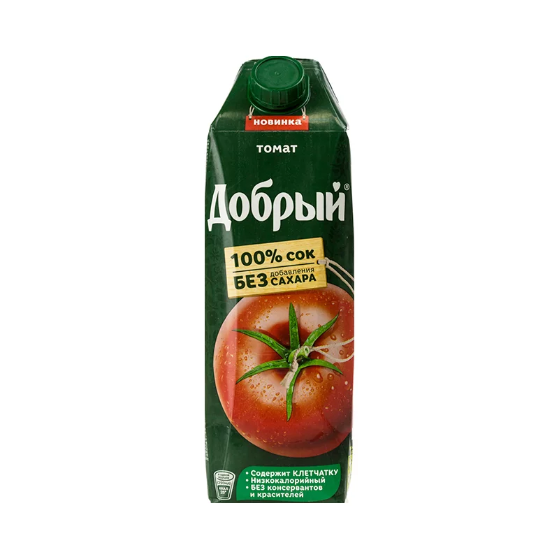
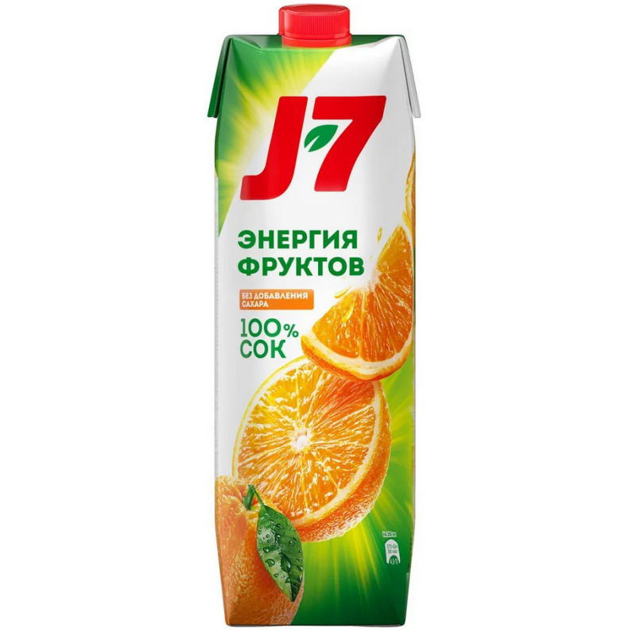
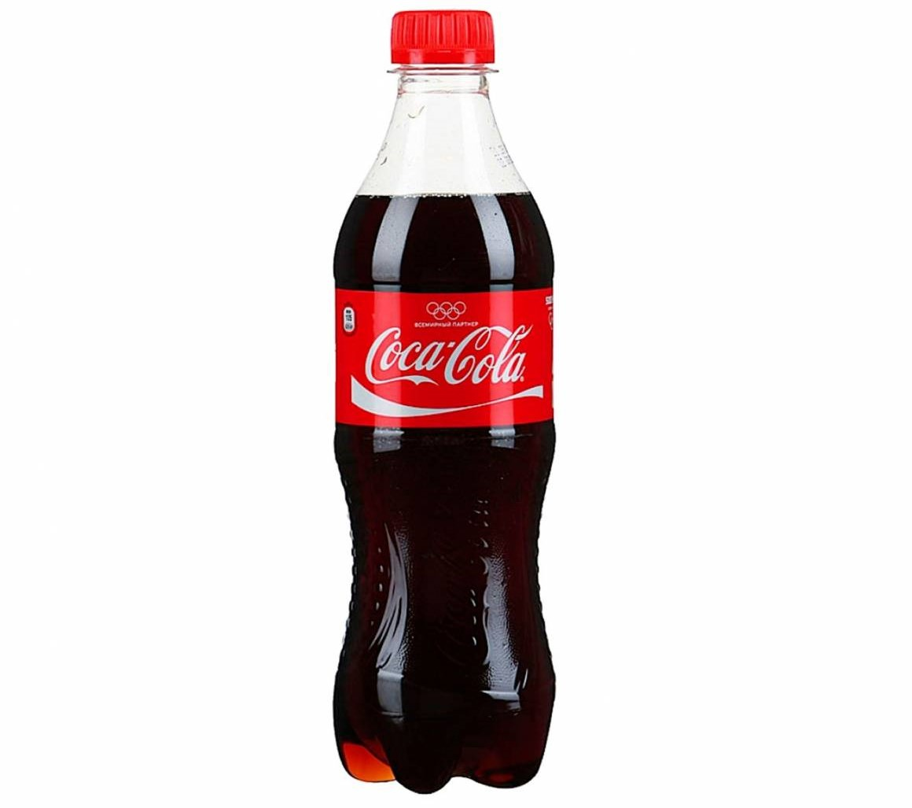

Купи свои любимые продукты и напитки прямо здесь. Взгляни на наши товары и начни делать покупки прямо сейчас!
Продукты

Макароны
Макароны — это итальянское тесто, обычно изготовленное из пшеничной муки, воды и яиц. Они бывают разных форм и размеров, от спагетти до фарфалле. Популярны во всем мире и могут быть поданы с различными соусами, от классического помидорного до изысканных сливочных. Легки в приготовлении, разнообразны в подаче и всегда вкусны!
₸890.00
Хлеб
Хлеб — основной продукт, приготовленный из теста на основе муки, воды, соли и дрожжей. Это древнее блюдо широко распространено в различных культурах. Хлеб бывает разных видов, включая белый, черный, ржаной и цельнозерновой. Он служит основой для бутербродов, канапе, и является важным компонентом многих блюд. Важен не только как источник энергии, но и культурный символ в различных обществах.
₸145.00

Торт
Торт — это сладкое лакомство, часто приготовленное из муки, сахара, яиц и различных добавок, таких как шоколад, фрукты или крем. Торты могут быть разнообразными: от простых пирожных до изысканных многоуровневых тортов на особых случаях. Они служат праздничным украшением и радуют не только визуально, но и вкусовыми ощущениями.
₸8990.00

Томатный сок
Томатный сок — это напиток, полученный из сока помидоров. Обычно он проходит процесс фильтрации и может быть приправлен солью, перцем или другими приправами для добавления вкуса. Томатный сок популярен как освежающий напиток, а также как основа для коктейлей, таких как "Мэри" или "Сицилианский сургуч". Благодаря высокому содержанию витаминов и антиоксидантов, он также считается полезным для здоровья.
₸450.00

Апельсиновый напиток
Это может быть свежевыжатый апельсиновый сок, газированный напиток с апельсиновым вкусом, или даже коктейль на основе апельсинов. Апельсиновые напитки обычно ценятся за свой яркий, освежающий вкус и высокое содержание витамина C.
₸430.00

Кока Кола
Кока-кола — это один из самых известных прохладительных напитков в мире. Это газированный напиток коричневого цвета с освежающим вкусом. Изначально был создан в XIX веке и стал популярным благодаря своему уникальному вкусу и успешной маркетинговой кампании. Кока-кола содержит углеводы, кофеин и другие ингредиенты. Этот напиток пользуется широкой популярностью во многих странах и стал символом мировой культуры.